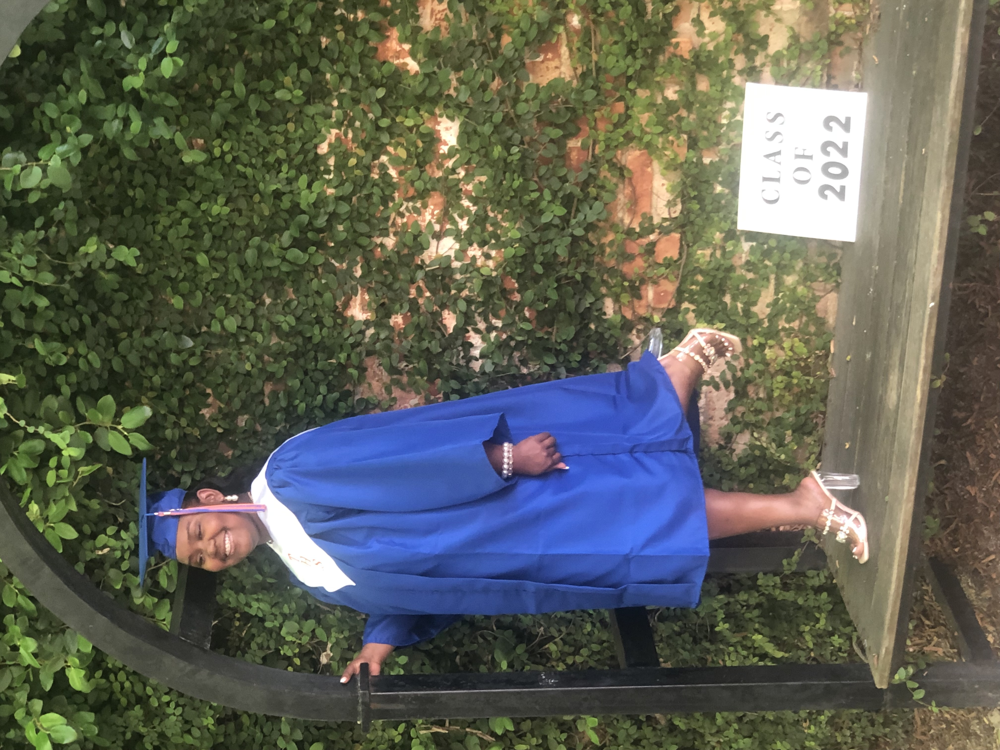
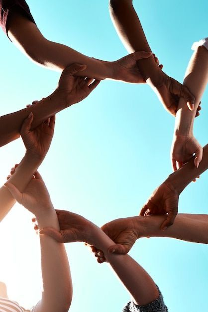
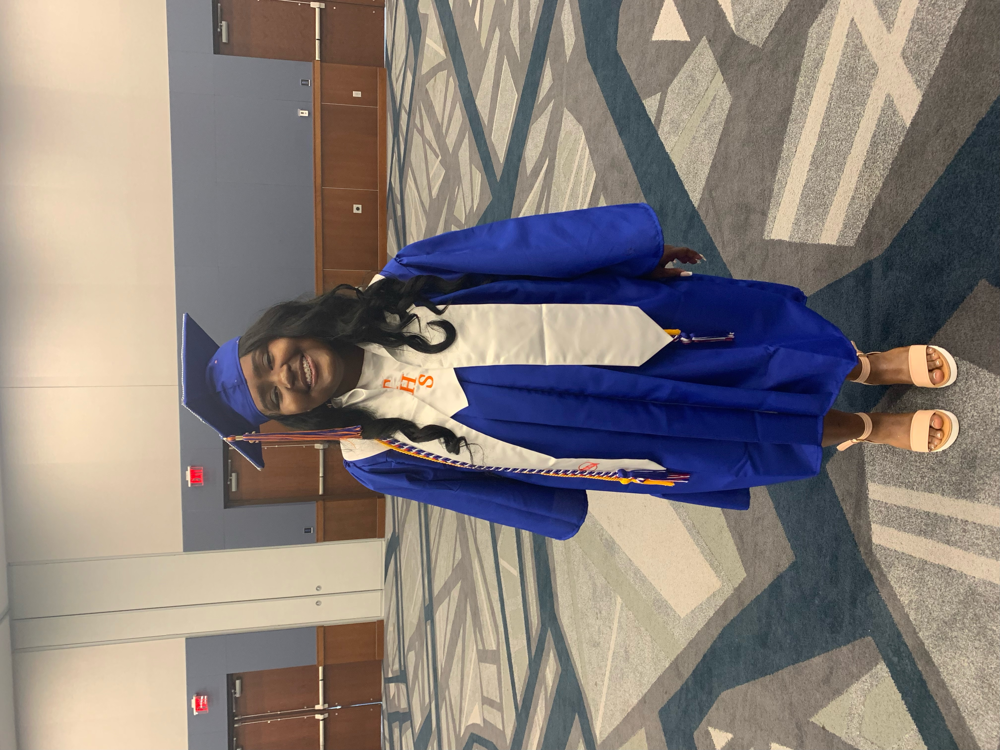

I am a individual that is dedicated to serving and helping others within my community. Over the years, I have set many educational goals for myself,and although I have worked hard acheive many of them, I still believe I can accomplish more.Below are some of my top accomplishments, ways I served within my community,and future goals I want accomplish.
Accomplishments
- South Carolina State University Honors College Emily E.Clyburn Full Scholorship Recipient
- Early High School Graduate
- Top Teens Of America

Community involvement
- Organized Church Food drive
- Volunteer at local daycare center
- Served as youth adsvior for community center

Goals
- Obtain degree in Web applications and Programming
- Enroll in 4 year computer engineering program
- Gain employment wihin web programming and design
